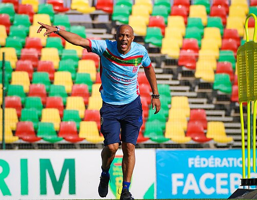
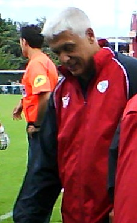
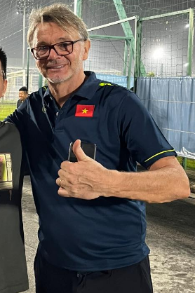
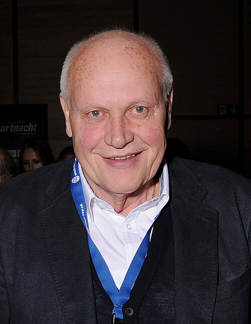

Amir Abdou 2026–2026 in progress 4 m · 1-2-1 · 1.25 pts/m
Brama Traoré
2024–2026
33 m · 17-5-11 · 1.7 pts/m

Hubert Velud 2022–2023 24 m · 11-7-6 · 1.67 pts/m
Kamou Malo
2019–2021
22 m · 10-9-3 · 1.77 pts/m
Paulo Duarte
2015–2018
46 m · 17-14-15 · 1.41 pts/m
Paul Put
2012–2014
40 m · 15-10-15 · 1.38 pts/m
Paulo Duarte
2008–2011
30 m · 15-7-8 · 1.73 pts/m
Ivica Todorov
2004–2004
15 m · 4-3-8 · 1.0 pts/m
Jean-Paul Rabier
2002–2003
19 m · 6-7-6 · 1.32 pts/m
Oscar Fulloné
2001–2001
16 m · 4-3-9 · 0.94 pts/m
Sidiki Diarra
2000–2000
14 m · 4-5-5 · 1.21 pts/m
Didier Notheaux
1998–1999
35 m · 13-12-10 · 1.46 pts/m

Philippe Troussier 1997–1997 10 m · 2-2-6 · 0.8 pts/m
Ivan Vutov
1996–1996
14 m · 2-6-6 · 0.86 pts/m
Idrissa Traoré
1992–1995
16 m · 4-8-4 · 1.25 pts/m
Heinz-Peter Überjahn
1988–1990
16 m · 11-1-4 · 2.12 pts/m

Otto Pfister 1976–1978 14 m · 4-3-7 · 1.07 pts/m